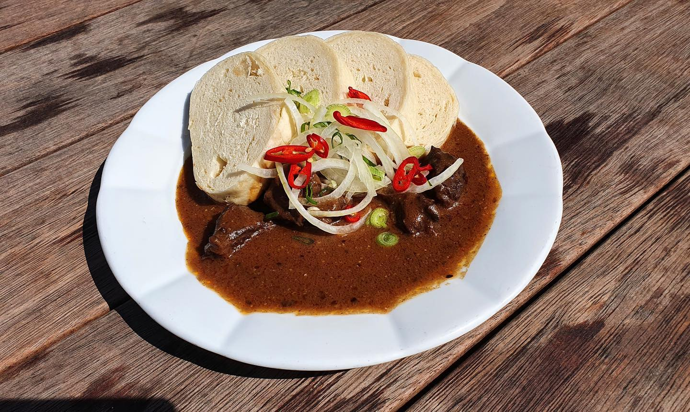

Maďarský guláš podľa @pivovarrevnice — Normy Jedál
Guláš. Původně 🇭🇺maďarský pokrm s masem z 🐃hovězího dobytka. Ten náš, řevnický guláš,je okořeněn cibulí, 🌶chilli papričkou a naší skvělou 🍺12tkou. Podáváno s domácím houskovým knedlíkem. Tak, nechte si chutnat!😊
#gulas #madarskygulas #hovezigulas #revnickepivo #revnice #revnickadvanactka #chilli #cibule #domaciknedlik #houskovyknedlik #domacihouskovyknedlik #kpivu #napive #gulasnapive #knedliky #kobedu #dneskobedu